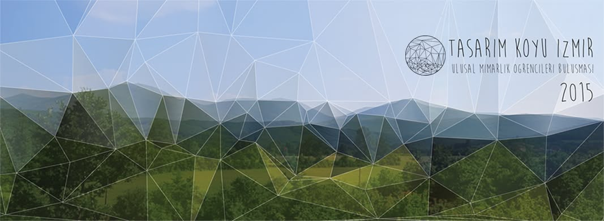
Every year, architecture students from across Turkey organize ÜMOB (Ulusal Mimarlık Öğrencileri Buluşması — the National Architecture Students' Meeting), hosted by a different volunteer student team each edition. In 2015, that team was us — a 13-person organizing committee from Yaşar University and Dokuz Eylül University in İzmir — and we gave our edition, the 32nd ÜMOB, a theme: Tasarım Köyü (Design Village). It ran 27 Temmuz – 3 Ağustos 2015 (July 27 – August 3, 2015) at Düzce Köyü, Seferihisar — 8 days, 120 participants, 18 workshops, led by 27 workshop facilitators for students from 37 different universities, across disciplines ranging from architecture, interior design, landscape architecture, urban planning, and industrial design to graphic design, sociology, and political science. It was also the start of something that outlived that single week: the "Tasarım Köyü İzmir" name and format continued into a second edition the following year.
Announcing it
Before the village itself, there was a launch night. On April 29th we introduced the program to İzmir's student and design community at İzmir Mimarlık Merkezi, and local press picked it up.
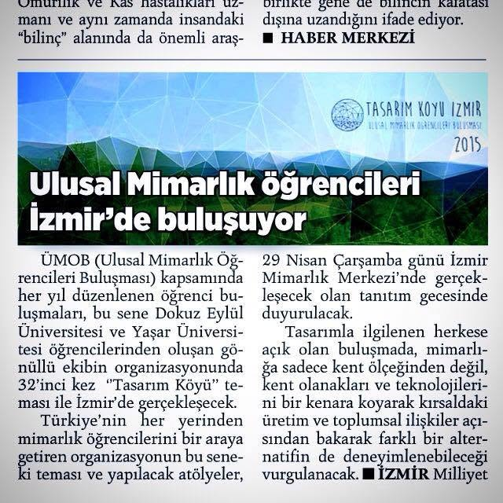
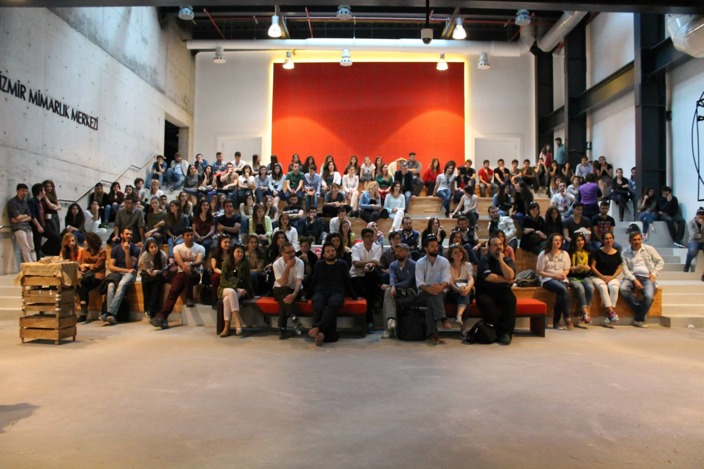
Building the program
Behind the scenes it was a small organizing team working out of borrowed spaces — dividing up content and program on one side, logistics and sponsorship on the other, and coordinating everything by whatever means we had.
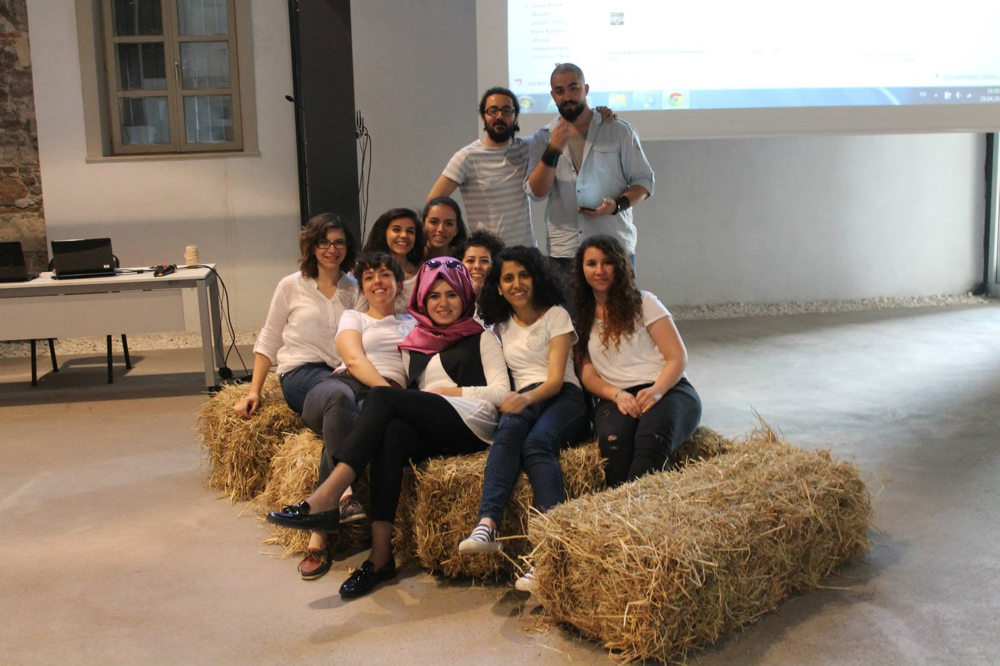
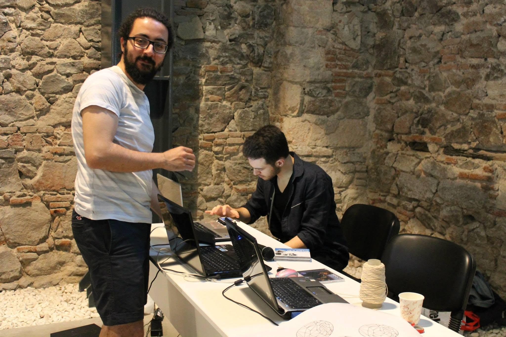
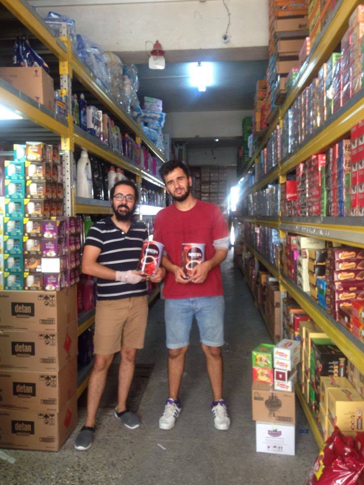
The workshops
The program ran 14 main simultaneous workshops alongside 4 shared ones, built around a theme of stepping outside of urban-centered design education to look at rural production systems, community relationships, and knowledge exchange with the village's own residents. Among them: Rural Production Systems (field visits and tool prototyping), Local Sound Landscapes (place-specific audio studies), Character Design, a Sofra (shared table) workshop exploring communal meals as a space for communication, a Parametric Pavilion built from local reed, a flipbook animation workshop, Architecture for Everyone (child-focused game design), and a "Design Hunt" for unnamed designs and designers already present in the village. The event was later covered in Natura Magazine's September issue.
By the numbers
18 sponsors and institutional partners — including the İzmir Chamber of Architects, İzmir SMD (Serbest Mimarlar Derneği), Seferihisar Belediyesi, TAV İnşaat, AKG Gazbeton, and Işıklar — backed 120 participants across 18 workshops over 8 days at Düzce Köyü.
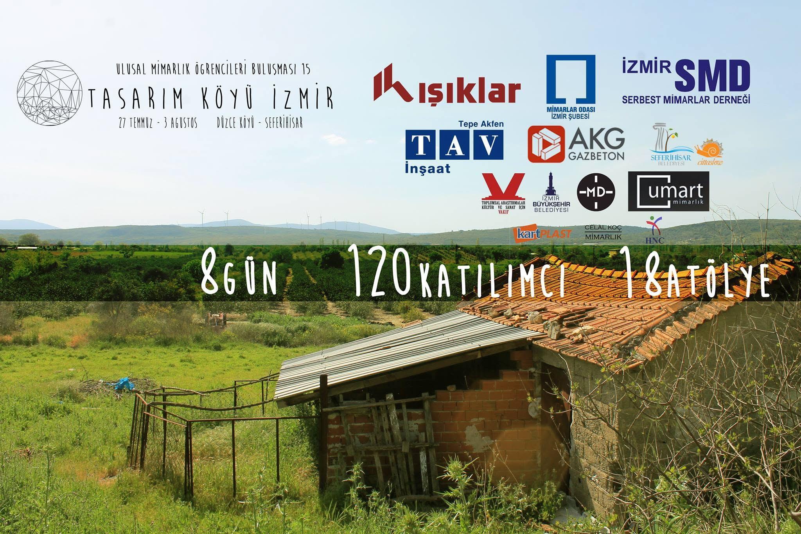
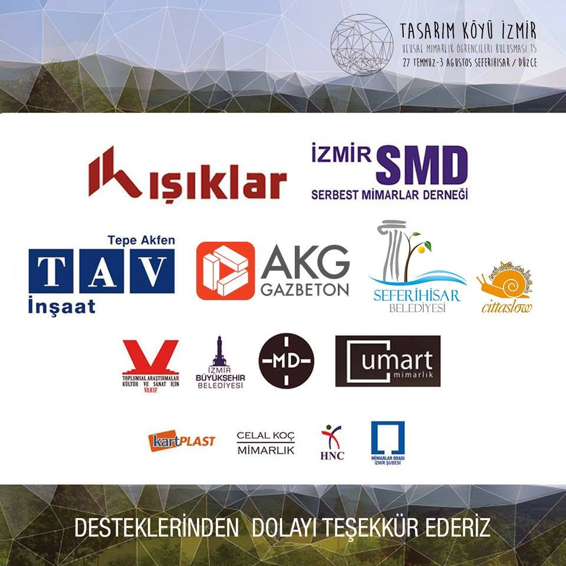
On the ground
Once the village itself opened, it became a shared space for workshops, communal meals, and open sessions for the neighboring community — kids included.
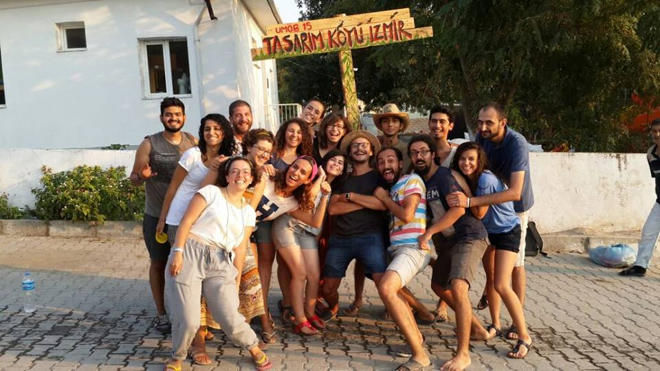
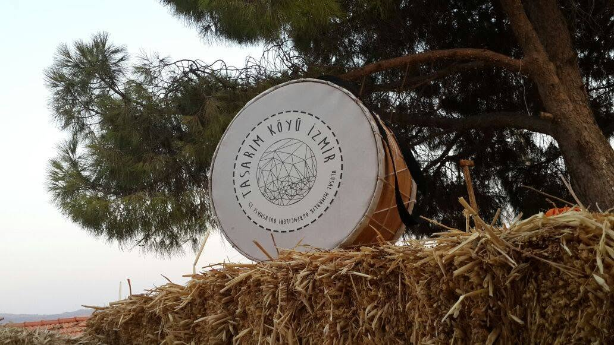
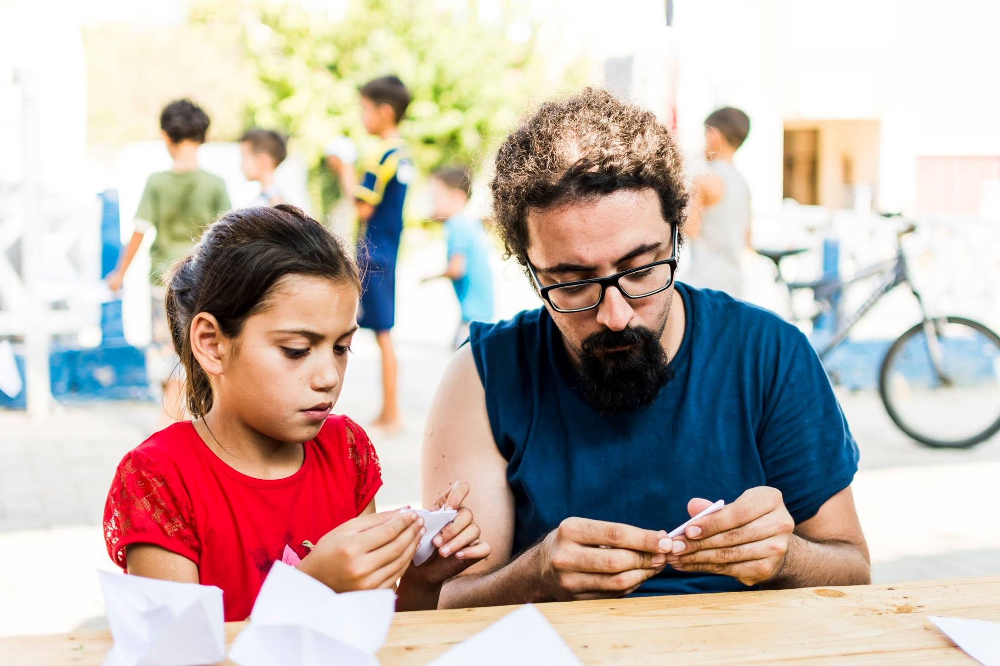
Tasarım Köyü İzmir didn't end here — we ran it again the following year. Read about the 2016 edition →
More on the project: